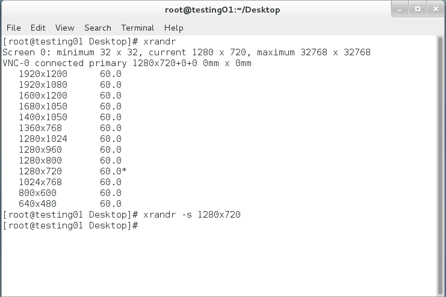

start VNC with custom resolution
- vncserver :1 -geometry 1300x740
VNC configuration
#!/bin/sh
xrdb $HOME/.Xresources
xsetroot -solid grey
autocutsel -fork
#x-terminal-emulator -geometry 80x24+10+10 -ls -title "$VNCDESKTOP Desktop" &
#x-window-manager &
# Fix to make GNOME work
export XKL_XMODMAP_DISABLE=1
/etc/X11/Xsession

END